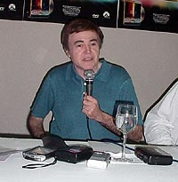
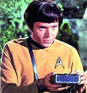
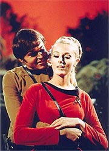
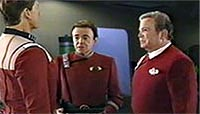
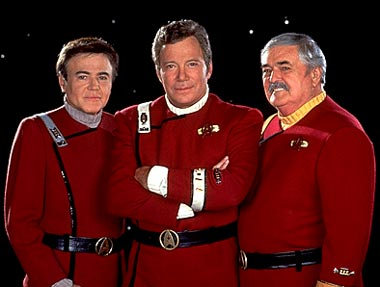
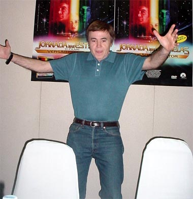

|
|
 |

|
Walter Koenig - Em nome de
todo o elenco original de Jornada nas Estrelas, eu
gostaria de agradec-los por virem aqui hoje. Durante todos
esses anos, minha experincia com Jornada foi muito
gratificante, e algo surpreendente. Eu pensei, quando Jornada
produziu novos "enterprises", por assim dizer, que ns,
da produo original, seramos esquecidos. Para minha grande
surpresa, o sucesso de cada srie que nos sucedeu parecia
adicionar um lustro, um brilho, uma venerao ao seriado
original. Em vez de sermos esquecidos, isso mudou nosso status e
nos elevou para sermos os grandes sbios de Jornada nas
Estrelas. E isso fez nossa existncia muito mais vivel do
que teria sido se no houvesse outras sries a nos preceder. O
que acontece que cada vez que voc desenvolve uma nova srie,
que o imprio de Jornada cresce, voc precisa voltar s
fundaes. A fundao adquiriu um certo tipo de reverncia
--claro, a fundao sendo a srie original. Ento, tem sido
muito surpreendente para mim que ns continuamos a ser... que a
srie original continua a ser uma entidade vivel. E eu
determinei, ao tentar explicar isso... Deus sabe, essa
pergunta que me fazem mais que qualquer outra, o que voc conta
para o sucesso de Jornada? E eu conclu que Jornada
nas Estrelas muito parecido com um empreendimento
esportivo, em termos de relevncia social. Voc tem um time de
futebol, um time de futebol do Brasil, que to incrivelmente
bem-sucedido, e os jogadores se aposentam, so trocados, so
vendidos, e novos jogadores vm a bordo, e voc ainda tem sua
lealdade para com o time. Isso realmente o que Jornada
. Ns trocamos times inteiros, mas ainda estamos sob a mesma
bandeira de Jornada nas Estrelas. Ento, com o fim da srie
original, veio a Nova Gerao, e as pessoas que
gostavam de Jornada em sua forma original abraaram a Nova
Gerao e eles se tornaram o novo time. E assim progrediu
com Deep Space Nine, Voyager e agora Enterprise.
Isso parte do mesmo franchise, do mesmo time, e se voc
gosta do original, voc vai seguir todos esses que vieram
depois. Esse meu comentrio sociolgico sobre o sucesso de Jornada
nas Estrelas. Pergunta - Rick Berman disse h duas semanas que estudava a possibilidade de uma participao especial para atores de outras sries de Jornada nas Estrelas em Enterprise. Se voc fosse convidado, aceitaria?  Koenig - Bem, eu acho que foi Shakespeare quem disse, "uma rosa uma rosa uma rosa". Um ator um ator um ator. E quando lhe oferecido um papel que tem alguma substncia e propriamente remunerado por sua participao e contribuio, ele certamente consideraria interessante uma oferta de participar em um projeto de Jornada nas Estrelas. Como regra, no penso em Jornada nas Estrelas como sendo uma parte importante do meu futuro. Eu acho que destrutivo, desmoralizante fazer isso, porque as possibilidades de eu estar envolvido com Jornada novamente so remotas. Eles esto procurando pessoas novas, caras novas, pessoas com quem a populao mais jovem possa se identificar, e no sobraria nenhum papel para ns, cidados seniores. Apesar disso, se a oferta viesse e se eles dissessem que eu poderia interpretar outro personagem, alm de Chekov, ou encontrassem um meio de levar Chekov a bordo, eu certamente alimentaria essa possibilidade, pela diverso. Uma oportunidade divertida de atuar. Primariamente pela oportunidade de atuar, secundariamente porque envolveria Jornada nas Estrelas. Mas, como eu disse, acho importante para o esprito, para o carter, seguir em frente e no mergulhar no passado. Tenho projetos em que estou trabalhando que so apenas tangencialmente ligados a Jornada nas Estrelas, no primariamente. E outros que no tm nada a ver com Jornada. Esse o modo que sinto que posso crescer como um artista e como um ser humano, encontrando novas aventuras. o princpio de Jornada nas Estrelas afinal, no? Audaciosamente ir? Ainda estou tentando audaciosamente ir onde jamais estive. Eu j estive em Jornada nas Estrelas.Pergunta - E o que voc espera dessa conveno no Brasil? Koenig - Eu espero me divertir muito. Eu tenho muito poucas experincias de conveno que no foram positivas, que no foram cheias de alegria, o entusiasmo dos fs nunca cansa de me impressionar, e acho to acalentador -- um bom sentimento sentir a afeio na sua direo-- gramtica terrvel. Eu ia dizer "amor", mas um pouco excessivo, eu acho. Acabei de volta de Bonn, na Alemanha, e de Londres, Inglaterra, e a reao foi impressionante. Eu estive em Viena, estive na Inglaterra de nove a dez vezes, e o que todas as experincias me disseram que, de um modo, em um modo perifrico, a Jornada nas Estrelas de Gene Roddenberry foi atingida. As pessoas vo a essas convenes com todas essas etnias, culturas, raas, crenas religiosas, e com um sentimento de unificao de um harmonioso sentimento de fraternidade e amizade. Isso o que Gene, claro, estava postulando como uma possibilidade para o futuro. E isso foi atingido, nessa pequena rea de ida s convenes, e tem sido desse jeito pelos ltimos 35 anos. Eu acho que timo quando voc encontra pessoas cuja lngua voc talvez nem entenda, mas voc v o mesmo brilho e o mesmo sentimento, e a mesma sensao de confraternizao no apenas com o convidado, mas uns com os outros, como se eles tivessem todos algo em comum, e eles podem sentir essa sensao de unidade e camaradagem com base nisso. Eu sei que parece um pouco romntico e talvez at potico, mas verdade. Isso o que percebi. E o que eu espero perceber em So Paulo tambm. Essa harmonia de pensamento, esse calor, esse sentimento receptivo, essa quase inocncia, e essa falta do cinismo que marca tantos de ns, que vivemos em um mundo que frequentemente hostil e ameaador. Falar em convenes se tornou um osis, um santurio e um lugar para substanciar sua crena de que o mundo um lugar sobre o qual devemos nos sentir bem e tentar melhorar. Pergunta - Qual a importncia do seu personagem na srie original?  Koenig - A relevncia de Chekov na srie pode ser definida nos termos da razo pela qual ele foi trazido para a srie. Ele foi trazido para atrair aos "jovenes" (est certo isso? [perguntando ao tradutor] "Jovens?", uma palavra diferente), dos oito aos quatorze anos, esse era o pblico que Chekov deveria atrair. Eles tinha forte apoio dos fs entre outros grupos demogrficos, certamente mulheres, jovens mulheres com o sr. Shatner, e mulheres de todas as idades com o sr. Spock, e os homens abraariam as aventuras do capito Kirk, do sr. Spock e dos outros caras. Mas eles queriam algum que atrasse da mesma maneira que Dave Jones, dos Monkees, atraa suas fs. De fato, esse o tipo de cartas que eu recebia, eu recebia cartas em papel de carta, escritas a lpis, me dizendo o quanto eu era "uma brasa". E a coisa divertida que eu era provavelmente dez anos mais velho que Dave Jones. Parece que o contrrio. Eles sempre procuraram uma verso mais nova de algum, e acabaram ficando com uma mais velha. Nessa base, minha entrada foi um sucesso. E, porque eles tambm me envolveram em alguns romances ocasionais, eu era interessante para essas jovens. Muito menos significante, ou pareceu assim para mim na poca, foi a influncia poltica, a contribuio de Chekov ser um russo. Se Chekov tivesse sido um patriota agressivo, bombstico, com fortes lealdades que interferissem com seu trabalho na Enterprise, ento eu diria que esse teria sido um papel audacioso, porque voc teria o conflito de um russo linha-dura durante a Guerra Fria. Chekov era um ursinho de pelcia, sabe, um bichinho de estimao. Ele comeava como, "Oh, no desse jeito que se faz na Rssia", mas ningum levava ele a srio. De fato, minha correspondncia reletia totalmente o fato de minha audincia no estar nem a. Eles s diziam que o sotaque era bonitinho, mesmo que impreciso, e que era divertido t-lo a bordo. No sei de mais de um punhado de cartas, se tanto, protestando contra a incluso de um russo durante esse perodo de tenses aumentadas entre nossos dois pases, nossas duas sociedades. Ento, eu no acho que ele fez um forte pronunciamento poltico. Eu acho que o propsito era realmente uma razo de marketing para traz-lo a bordo. E foi bem-sucedida, bem efetiva. Eu recebi uma grande quantidade de cartas, particularmente durante minha primeira temporada, quando elas descobriram que eu era casado e no tinha 22, mas na verdade 31. O resultado foi exatamente o que o estdio esperava.Pergunta - Como voc v a sua relao com a fico cientfica, tendo trabalhado em Jornada nas Estrelas, em "Babylon 5" e em outros projetos do gnero? Koenig - Bem, ela certamente teve um papel dominante na minha vida. Realmente moldou os ltimos 35 anos da minha carreira, no h como escapar. Mas de um jeito ou de outro, Jornada e "Babylon 5" e todo o mbito da fico cientfica foram muito influentes em como minha vida progrediu, quase tomando uma vida prpria. No nada que tenha escolhido fazer, algo planejado, simplesmente aconteceu. Atualmente, por exemplo, estou dirigindo adaptaes teatrais de dois episdios de "The Twilight Zone". Estamos fazendo em Los Angeles e deve ser muito bem-sucedida. Eles tm as pessoas que tm os direitos sobre todas as histrias de Rod Serling, as 90 e tantas que ele escreveu, e acho que eles pretendem fazer isso como uma atividade cult, onde as pessoas vo tarde da noite assistir s peas. De fato, os dois primeiros, os dois que eu dirigi, esto estreando este fim de semana. a nica coisa que lamento por estar aqui, no poder estar l para a estria. Sim, verdade que eles me abordaram por que me viram, eles haviam ouvido sobre minha direo em outros shows que no tm nada a ver com fico cientfica (eu dirigi uma meia dzia de peas em Los Angeles, "Terence Williams", acho que uma pea chamada "The Fastest Clock in the Universe", pelo menos meia dzia, "Hotel Paradiso"), ento eles sabiam que eu tinha alguma habilidade naquela rea, mas, certamente, no podemos evitar a associao de que eu estive envolvido com Jornada nas Estrelas e estava dirigindo "Twilight Zone". A mdia imediatamente engoliu isso. Houve literalmente um artigo de trs pginas no "Los Angeles Times" sobre esse projeto. Nunca teria sado, nunca teria sido um artigo de trs pginas, se fosse algum outro dirigindo-o, talvez at mais especialista, mais experiente como diretor do que eu, mas no envolvido com Jornada nas Estrelas. Ento, voc v, mesmo dessa maneira tangencial, tudo volta a Jornada mais vezes que no. Eu no tenho problemas com isso. No sinto como se estivesse vivendo do passado quando chega a isso, como se fosse uma ameaa a meu senso de bem-estar, porque eu apenas usei isso como uma catapulta, e estamos fazendo outras coisas. E, certamente, dirigir "Twilight Zone", embora seja fico cientfica, uma experincia bem diferente da de atuar em Jornada nas Estrelas, e estou empolgadssimo com isso. Aqueles roteiros no foram feitos para serem encenados em teatro, sempre iam para a televiso, ento h um desafio que acho bem empolgante. Pergunta - Esse elo com a fico o prejudicou de algum modo? Koenig - Eu adoraria ter tido uma carreira mais ampla e oportunidades de trabalhar no espectro total da condio humana e das circunstncias e situaes humanas. Isso foi muito abreviado pela forte associao que eu tenho com Jornada nas Estrelas. Por outro lado, estar envolvido com Jornada tornou possvel que eu me mantivesse pelos ltimos 35 anos. Tornou possvel que minha pessoa e presena estivessem nas conscincias, nas mentes das pessoas hoje. E isso, voc sabe, mesmo ns sendo de outra era, ainda deixa aquele senso de viabilidade. O que muito bom de ter, se sentir que no est nas ltimas, que voc no a notcia de ontem. Ns somos as notcias de ontem, mas de algum modo eles continuam nos trazendo de volta, sabe? Trek Brasilis - Walt, obrigado por estar aqui hoje e espero que no esteja to bravo conosco por faz-lo acordar to cedo. Gostaria de fazer duas perguntas, ambas sobre as relaes entre os atores na srie original. (Koenig se segura na borda da mesa, numa posio como se estivesse se preparando para o impacto, arrancando risos da platia.) A primeira uma boazinha. Na srie original vemos Chekov e Sulu como grandes amigos. Gostaria de saber se na vida real voc e George Takei se do to bem quanto os personagens. E a segunda, como voc pode adivinhar, sobre o caso Bill Shatner. Gostaria de saber exatamente qual a sua atual situao com William Shatner, porque todos sabemos que o elenco de apoio no se d bem com o Bill, mas nos ltimos anos ele disse estar disposto a se reconciliar com seu passado e superar as diferenas. Gostaria saber se a experincia em "Generations" e em tudo que veio depois mudou algo entre voc e Shatner. Koenig - Minha relao com George Takei muito boa, muito forte. George recentemente fez aniversrio, e ele teve 20 pessoas em sua festa, e eu fui convidado para estar entre eles. Sua me morreu h duas ou trs semanas, e eu fui convidado para o funeral. Ento, nos bons e nos maus momentos, ele me considera um amigo e uma companhia com quem ele gostaria de dividir essas experincias, ento me sinto feliz com isso e nos damos muito bem. (Pausa, ento ele olha com uma expresso desmemoriada.) E quem era a outra pessoa de quem voc estava falando? (A platia cai na risada e aplaude.)  Voc sabe, foi muito frustrante passar por aquilo, e vou tentar falar sobre isso. Foi muito frustrante. Voc sabe, curiosamente, no foi frustrante para mim durante a srie. Na srie o sr. Shatner foi muito alegre e cheio de animao, e, sim, havia coisas acontecendo por trs daquilo, mas foi onde elas ficaram, sobre quo grande seu papel seria e quo grande o papel de Leonard seria, e essas coisas foram comentadas, mas eu nunca tive contato direto com isso. Ento, ele, como nosso lder durante a srie, manteve um clima bem leve nos sets. Foi agradvel estar l. Eu nunca o conheci muito bem, mas no tive qualquer problema com ele de que me lembre. Foi s quando comeamos a fazer os filmes e sua responsabilidade ficou to enorme. Quero dizer, o financiamento para esses filmes dependia do envolvimento dele, e do Leonard. Exceto que temos evidncia de que eles teriam seguido em frente sem o Leonard, se ele no tivesse mudado de idia e decidido fazer o primeiro filme. Mas certamente eles no iriam em frente sem o sr. Shatner. Ento, acho que Bill comeou a pensar que ele tinha uma responsabilidade com a srie que era monumental, e sua contribuio para a srie deveria ser de um mesmo tamanho, teria de refletir o que ele percebia como a importncia dele para a srie. Ento, com isso em mente, que ele nunca discutia cenas no escritrio do diretor, antes de filmarmos; ele pedia mudanas nas cenas durante as filmagens. Ento, se havia uma nica configurao para enfocar outro ator, Walter, ou George, ou Nichelle ou Jimmy, e Bill achava que havia outro modo de fazer, que seria igualmente bem-sucedido e razovel, mas que o colocaria como o principal ator, ele falaria com o diretor e eles mudariam as coisas para que ele se tornasse o principal na cena. Certamente ele j tinha cenas suficientes em que ele era o principal, mas ele queria todas, se pudesse t-las. E isso causou muito ressentimento.E ele dizia, "bem, qual o problema, so s algumas palavras aqui, alguns ngulos de cmera", mas quando tudo que voc tem so algumas palavras aqui e um ngulo de cmera ocasional como ator coadjuvante, ento difcil ignorar quando eles so tirados de voc, e no pelo diretor ou pelo produtor, mas por outro ator, que determina qual vai ser o seu envolvimento na cena. Agora, essa talvez a primeira premissa de atuar, de estar em uma companhia de atuao, de estar no teatro: o ator, um ator no dita o que vai acontecer com outro ator. Isso a provncia exclusiva do diretor, escolha do diretor -- por isso que ele o diretor. Bill assumiu esse papel vrias vezes em nosso detrimento. E ao longo do tempo isso construiu ressentimento. Eu nunca pensei que ele o fazia por capricho, nunca achei que ele fazia por amargura ou algo dessa natureza. Ele fazia porque... lhe servia bem. No era para machucar ningum. No era para causar sofrimento a ningum. Mas era como se colocar na posio de ator mais importante na tela o maior tempo possvel. E essa foi realmente a base do problema que tivemos. da basicamente que tudo veio. Agora, quando Leonard dirigiu, no tivemos esse problema. ELe no tentava, ou muito poucas vezes ele tentou convencer Leonard a retrabalhar uma cena para que ele estivesse na frente, principalmente, eu acho, porque eles discutiam de antemo --o que, se voc vai fazer algo assim, como deveria ser, no na presena dos outros atores. Agora, as coisas melhoraram? Quando eu fiz "Generations", sabe, depois de todos aqueles filmes, meu estmago encolheu, porque eu no falava. E, como eu falava a Richard Arnold no caminho para c no avio, minha raiva tem muito a ver com nada mais que meu prprio temor, minha intimidao, que me impediu de levantar e dizer: "Corta essa. Isso bobagem." Sabe? "Respeite os outros atores." Eu no fiz isso, nem nenhum dos outros fez. Isso a maior causa pela raiva residual que eu sinto, eu me culpo. Claro, havia uma explicao razovel para eu no me erguer, que era "quanto poder o sr. Shatner tem?" Poderia ele dizer, "se Koenig fizer esse prximo filme, eu no vou faz-lo." Poderia ele ter me colocado para fora? Sempre senti que isso era absolutamente possvel. Eu no tinha evidncias de que ele faria isso. Mas eu apenas juntei os fatos tais quais os conhecia. Ele era o cara da grana, ele era o lder, era essencial que ele estivesse l eles tentariam faz-lo feliz. E eu assumi que era possvel que algo assim acontecesse. Independentemente disso, um homem corajoso no avalia todas as possibilidades e ento recua porque logicamente no a coisa certa a fazer. Um homem corajoso vai adiante e arrisca baseado em conscincia, em carter, em princpio --e eu nunca fiz isso. Ento tenho de dizer que me culpo um bocado. Quando fizemos "Generations" e quando fizemos "Star Trek [Starfleet] Academy", e "Generations" ramos s Bill, eu e Jimmy Doohan, e quando fizemos "Starfleet Academy", era s Bill, eu e George Takei, a relao mudou consideravelmente. ELe no sentia a mesma presso, em nenhum desses projetos, de ser o cara principal. E ele estava muito mais fcil, muito mais acessvel, fcil de trabalhar. Ento, minhas duas ltimas experincias profissionais com Bill foram agradveis. Quando fomos fazer o "Academy", que um videogame, entramos num ataque de risos igual duas criancinhas. Deveramos estar prontos para fazer a cena e estvamos "heeheeheehee...", no conseguamos parar de rir. Eu nunca poderia imaginar tendo esse tipo de relao com o Bill, ento isso foi realmente bem agradvel. Ele subsequentemente pediu que nos juntssemos a ele em um vdeo discutindo quais foram os problemas em Jornada nas Estrelas e o que ns pensvamos que havia dado errado, e eu preferi no fazer isso. Pessoalmente, eu no queria cavar aquilo tudo. Eu no queria realmente pensar sobre essas coisas a no ser quando me perguntassem, isso passado. E no quero mergulhar nisso. E senti tambm que era, novamente, uma oportunidade para Bill sair como a vtima e o incompreendido, e eu no queria dar a ele essa oportunidade.  
|